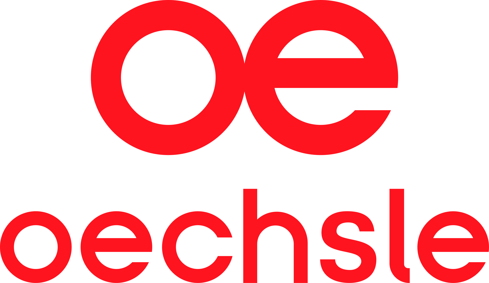
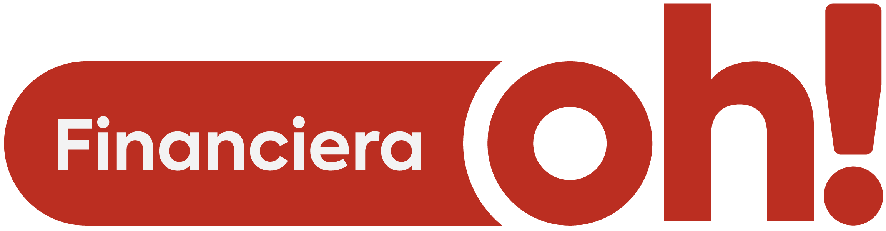
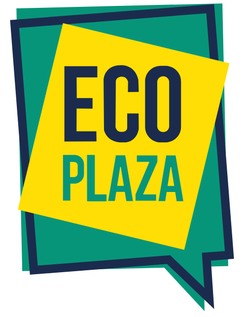
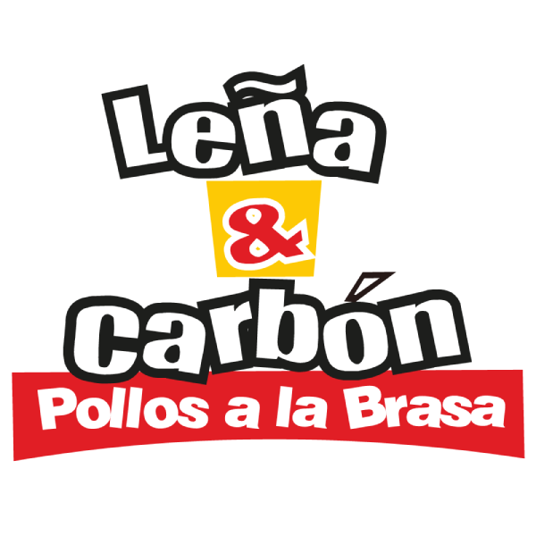
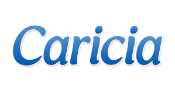
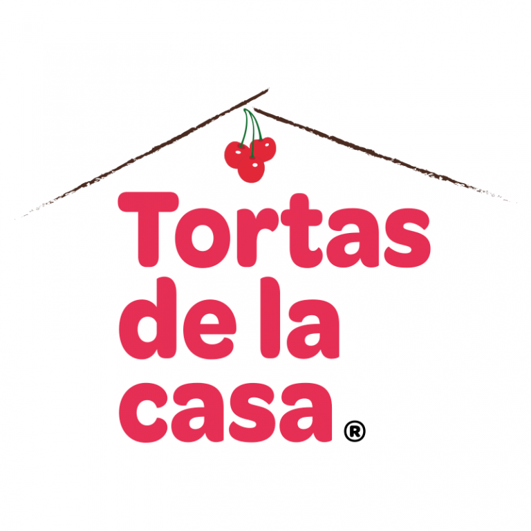

Inversión sin retorno claro
¿Por qué no estoy vendiendo más si estoy invirtiendo más cada mes en marketing?
Ayudo a empresas medianas a entender qué está frenando su crecimiento digital y a construir estrategias basadas en datos, paid media y mejora continua.
45 minutos · Sin costo · Sin compromiso
Marcas para las que he trabajado






Probablemente llevas meses o años destinando presupuesto a Meta Ads, Google Ads o TikTok. Tienes reportes, tienes métricas, tienes una agencia o un freelancer. Pero cuando te sientas a revisar los resultados, aparecen las mismas preguntas.
¿Por qué no estoy vendiendo más si estoy invirtiendo más cada mes en marketing?
¿Qué parte del embudo está fallando realmente — el anuncio, el mensaje, el seguimiento?
¿Por qué mi negocio depende tanto de una sola plataforma como Meta o Google Ads?
Los leads llegan pero no terminan en clientes. ¿Es la campaña, el equipo comercial o el mensaje?
¿Estoy pagando por tráfico que no convierte o por clientes reales que mueven el negocio?
¿Mi agencia o freelancer realmente está optimizando, o solo está manteniendo las campañas activas?
Si alguna de estas preguntas te resuena, probablemente no necesitas invertir más. Necesitas entender mejor qué está pasando.
La mayoría de problemas de crecimiento digital no se resuelven dentro del administrador de anuncios. Se resuelven entendiendo el negocio, el embudo, los mensajes, la medición y el proceso comercial completo. Mi trabajo empieza con un diagnóstico honesto: revisar qué está funcionando, qué no, y dónde están las oportunidades reales de mejora.
Antes de invertir más, necesitas saber qué está funcionando y qué no.
Cinco formas de trabajar juntos, según el momento y las necesidades de tu negocio.
Acompañamiento continuo para entender qué está frenando tu crecimiento digital y qué acciones priorizar. Trabajamos sobre estrategia, decisiones de inversión y mejora del embudo.
Ideal si: ya tienes un equipo o agencia ejecutando, pero necesitas una mirada externa y estratégica.
Revisión detallada de campañas, canales, anuncios, embudo, medición y procesos de seguimiento. Entrego un informe con hallazgos y un plan de acción priorizado.
Ideal si: sientes que inviertes mucho y no tienes claridad sobre qué está funcionando.
Definición de objetivos, estructura de campañas, distribución de presupuesto, mensajes, segmentación y testeo para Google Ads, Meta Ads, TikTok Ads y LinkedIn Ads.
Ideal si: vas a lanzar una nueva campaña o necesitas replantear tu estrategia de medios.
Implementación de dashboards en Looker Studio, automatización de reportes, flujos de trabajo con Make y n8n, y mejora de procesos de seguimiento comercial.
Ideal si: pierdes horas armando reportes o tu información vive dispersa en múltiples plataformas.
Gestión operativa de campañas digitales en casos puntuales donde se requiere apoyo en la implementación directa. Disponible según alcance.
Ideal si: necesitas a alguien que no solo piense la estrategia, sino que también ayude a ejecutarla.
Cinco pasos para convertir inversión en aprendizaje y aprendizaje en crecimiento.
Escuchar el negocio antes de proponer soluciones. Entender tu contexto comercial, tus resultados actuales, lo que ya intentaste y lo que necesitas lograr.
Revisar campañas, canales, anuncios, embudo, medición y seguimiento. Detectar cuellos de botella, oportunidades y decisiones que pueden mejorar rápidamente.
Definir prioridades, objetivos claros y acciones concretas. No una lista infinita de tareas: un plan realista, con foco en lo que mueve la aguja.
Ejecutar directamente o guiar al equipo interno o a la agencia. El rol se ajusta según lo que tu negocio necesita.
Leer resultados, identificar patrones, ajustar y volver a probar. El marketing digital no es un proyecto que se termina: es un proceso que se optimiza.
Un consultor que cree en el método más que en las fórmulas mágicas.
Llevo varios años trabajando en growth marketing y paid media para empresas de distintos rubros: consumo masivo, retail, e-commerce, inmobiliario, salud, gastronomía, B2B y fintech. He gestionado cuentas como Kärcher, TUGÓ, Tinajas, Leña y Carbón, Moncler, Caricia y El Refugio, entre otras.
Creo que el marketing es, antes que nada, un laboratorio. No existe una fórmula que funcione para todos los negocios. Lo que sí existe es método: diagnosticar, probar, medir, aprender y volver a probar. Esa es la forma en que he visto crecer cuentas de manera sostenible — no con promesas exageradas, sino con criterio y disciplina.
Me interesa trabajar con empresas medianas porque creo que ahí es donde el trabajo estratégico puede generar más impacto. Son empresas que ya tienen trayectoria, que ya invierten en digital, pero que muchas veces no encuentran el nivel de acompañamiento que necesitan dentro de una agencia tradicional.
Si algo me representa, es la curiosidad. Si hay algo que no sé, lo investigo, lo aprendo y lo aplico. El marketing cambia todo el tiempo, y esa es la única forma de seguir siendo útil.
Ubicación: Lima, Perú
Enfoque: Growth Marketing · Paid Media · Analítica
Herramientas: Google Ads · Meta Ads · Looker Studio · Make · n8n
Cada industria tiene su propio ritmo, su propio cliente y su propio embudo. He tenido la oportunidad de aprender de varias.
Consumo masivo
Retail
E-commerce
Inmobiliario
Salud y clínicas
Restaurantes y gastronomía
B2B
Fintech y servicios financieros
Empresas de servicios
No prometo lo que no puedo sostener con datos. Estos son tres casos representativos de cómo trabajo.
Trabajo continuo sobre campañas de Google Ads (PMAX, Search, Shopping) y Meta Ads, con redistribución de presupuesto basada en rendimiento real y testeo creativo constante.
Aprendizaje clave: en e-commerce, la rotación creativa y la estructura de campañas impacta más que el tamaño del presupuesto.
Estrategia de Meta Ads y Google Ads orientada a ventas web y tráfico al canal digital, con foco en mensajes que conecten con el momento de decisión del consumidor.
Aprendizaje clave: en gastronomía, la creatividad y el mensaje pesan tanto como la segmentación.
Optimización continua de anuncios, iteración de comunicación publicitaria y mejora de la propuesta visual de campañas para aumentar captación de leads calificados.
Aprendizaje clave: en fintech, la confianza se construye anuncio por anuncio. La rotación creativa no es opcional.
Ideas, errores comunes y claves prácticas sobre paid media, growth y marketing digital. En video y en texto.
Por qué muchas campañas B2B no funcionan, y qué mirar antes de pausar la inversión.
Leer resumen →Una métrica que se mira mucho pero se entiende poco. Cómo leerla con criterio.
Leer resumen →El momento correcto para subir presupuesto, y las señales de que conviene esperar.
Leer resumen →Si tienes una pregunta que no está aquí, escríbeme por WhatsApp o agenda directamente.
Sí. Es una sesión de 45 minutos donde conversamos sobre tu negocio, tus preocupaciones actuales de marketing y las posibles oportunidades. No hay obligación de contratar nada después.
Mi trabajo está pensado principalmente para empresas medianas que ya invierten en marketing digital y que quieren optimizar o escalar sus resultados. Si tu empresa recién empieza, puedo orientarte en la primera reunión, pero probablemente necesites un enfoque distinto al que ofrezco.
No necesariamente. Muchas veces trabajo junto a agencias o equipos internos, aportando una mirada estratégica externa. En otros casos, sí asumo la ejecución. Depende del contexto.
La primera reunión es gratuita. A partir de ahí, las sesiones de consultoría tienen un costo aproximado desde 40 USD por sesión, y los servicios de auditoría, estrategia o acompañamiento continuo se cotizan según el alcance del proyecto.
Depende del punto de partida y del tipo de negocio. En auditorías, los primeros hallazgos útiles aparecen desde la primera semana. En estrategias de paid media, los ciclos de aprendizaje suelen tomar entre 2 y 8 semanas. Te lo digo claro desde el inicio: no prometo resultados de la noche a la mañana.
Estoy basado en Lima, pero trabajo de manera remota. He colaborado con empresas y equipos distribuidos, así que la ubicación no es un límite.
Recibirás un correo de confirmación con el link de la reunión. Antes de la sesión revisaré brevemente la información que hayas compartido en el formulario para llegar con contexto y aprovechar mejor los 45 minutos.
45 minutos. Sin costo. Sin compromiso. Solo una conversación honesta sobre dónde estás hoy y qué oportunidades podrían estar esperándote.
También puedes escribirme a: marketing@jeansegil.com